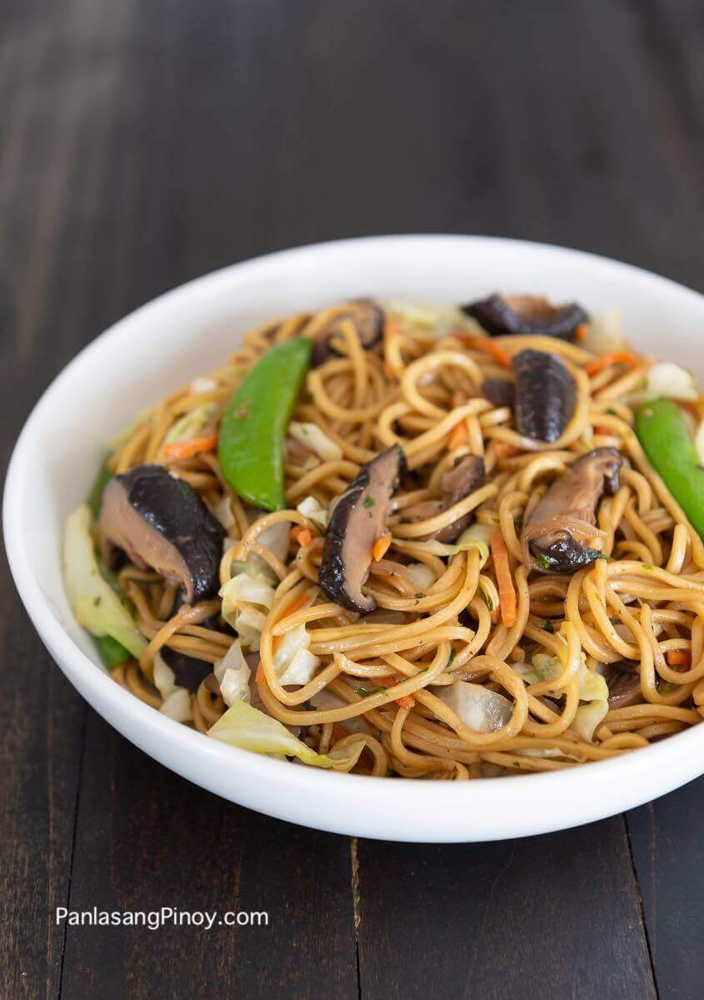

23 Easy Filipino Vegetable Recipes
It can be easy to dismiss healthier, more nutritious recipes as inaccessible or simply too expensive. But there are actually plenty of dishes to choose from should you decide to take up a cleaner diet. And luckily for us, Filipinos, we have an abundance of vegetable dishes to choose from. This is because of how the country is generally rich in agriculture, leading to the accessibility of fresh, colorful vegetables. For this article, I will run through 23 easy Filipino vegetable recipes you can learn right at home!
Do not let the connotation of healthy dishes intimidate you because these really are simple enough to cook on your own. And the great thing about local cuisine as well is its variety. Even with vegetable dishes, you will notice that the flavors are not repetitive. But for those who prefer meat-free vegetable recipes, I have grouped these together, while showing some other options as well.
Take a look at these recipes!
Easy Vegetable Recipes without meat:
Ginataang Sitaw at Kalabasa with Crabs

In the Philippines, some of the best vegetable dishes really are those made with the ever-creamy, soothing coconut milk. I would truly recommend going with some Ginataang Sitaw at Kalabasa with Crabs if you’re looking for a recipe rich with nutritious components, and classic Pinoy cuisine flavor. This has all the essentials for a savory taste— from fish sauce to garlic to onions. All of these brought together gives life to our fresh blue crabs, squash and string beans.
This mix of seafood and vegetables is undeniably wholesome, and reminiscent of the feeling of home. It is also a great turn away from dry dishes that are lacking in that satisfying taste of stew. Although this already plays with a great mix of components, you should definitely feel free to experiment with more ingredients. Some like to mix in a bit of meat into the dish, or perhaps some more greens.
Corn and Malunggay Soup
Some days, you end up craving a perfectly warm, nice soup dish. If today is one of those days, I would definitely recommend the soothing taste of Corn and Malunggay Soup. You get to savor the taste of chicken broth with one of the most popular types of greens in Filipino cooking, which is malunggay. It also has a perfect balance of flavors. This isprovided by the subtle notes of saltiness from virgin olive oil, as well as the light sweetness of white corn.
You can also opt for this dish when you happen to be in a bit of a hurry. It only takes about a half hour to make. You will just have to put together your ingredients in a particular order to ensure that the flavors blend well, and let them simmer. And if you’ve taken notice of the components I mentioned, you would know that this is pretty convenient as a recipe as well. Corn and Malunggay Soup mostly uses ingredients you likely already have onhand in your kitchen.
Bulanglang
Now what about a dish that is nearly all vegetables? Adding more of these kinds of meals in your diet would definitely help keep your immune system in great shape! This is why I would also recommend learning how to create your own Bulanglang dish. This recipe originates from Batangas, and is rich in vibrant, enriching vegetables. It would be pretty hard to get sick of this dish because it has such a pleasant variety of components. The texture could vary in every bite, depending on whether you get the green papaya, patola, okra or any of the other ingredients this dish plays with.
But because we let the vegetables mainly speak for themselves in terms of flavor, this often turns out to be a mild-tasting dish. If your preference is the opposite, you could also choose to add some more seasonings, such as salt.
Vegetarian Pancit Sotanghon
What about more celebratory vegetable recipes? You can definitely go the nutritious, nourishing route for your party dishes, and one of the best ways to go about this is through the Vegetarian Pancit Sotanghon. This is essentially made of vermicelli noodles, celery stalk, carrots, vegetable broth, and a variety of other ingredients to achieve that perfect savory taste. Another plus is you can enjoy this delightful meal with anyone who has diet restrictions to eat vegan. This is because we don’t use any animal by-product, including the noodles.
Now if you’re wondering about the cooking process, let me assure you that this is a pretty simple stir-fry dish. All we will need to do is cook our noodles, and incorporate our set of ingredients into the pot in a particular order. It shouldn’t take too much effort in the kitchen, and so go ahead and try making some for the family!
Ampalaya Salad
I’ve introduced you to quite a good variety of vegetable recipes at this point. But if you want to explore those with a more distinctive taste— boasting of a bitter and tangy collaboration, I would suggest the easy, delicious Ampalaya Salad! Firstly, this dish is quite easy on the eyes because of the satisfying mix of colors. You could definitely have fun when it comes to the presentation of this dish.
Now for the preparation, this will also take just a quick trip in the kitchen. Once you’ve prepared all the vegetables by slicing and cleaning, the steps are pretty easy. But if you like your ampalaya on the less bitter side, there are also ways to get rid of this overpowering flavor. In this article, I also talk about how salting the bitter gourd can help make the taste milder.
Kilawing Puso ng Saging
Cane vinegar, yellow onions, green chili peppers and chopped banana blossoms— these are just some of the glorious ingredients making up our wholesome Kilawing Puso ng Saging. Kilawin is a kind of recipe that has branched out into many renditions. This is because you can really experiment with the flavors it brings about, which include sweetness and sourness.
This version, in particular, lets you enjoy the beloved local recipe without needing meat. It is a great alternative for when you want a viand that’s a bit less heavy, and is filled with all kinds of nutrients as well.
Monggo Guisado with Dilis and Malunggay

Could we really get through this entire list without a yummy, simple monggo dish? If you are familiar with Filipino recipes, you would know that mung beans have become pretty standard in our cooking. And why wouldn’t these be? Mung beans are a fantastic source of fiber, which can help in absorbing nutrients. These are also quite rich in antioxidants, vitamin B, and numerous other essential components. I would definitely recommend some Monggo Guisado with Dilis and Malunggay for your health.
However, this dish is also perfect for when you want something warm, salty and absolutely satisfying. We have dried anchovies for that uniquely savory taste, as well as fish sauce to season all of our vegetables nicely.
Ginisang Ampalaya with Shrimp
Bitter gourd may not be the most inviting ingredient for some Filipinos. It is known for its signature strong, bitter flavor, which can put some people off. But when you cook it right, it makes for a fantastic, one of a kind addition to a dish. It particularly tastes great in this Ginisang Ampalaya with Shrimp dish because the semi-sweet seafood contrasts nicely with the mild bitterness of the green vegetable.
However, you could also work on lessening the harshness of that flavor with certain methods. I mentioned one earlier, which would be salting the ampalaya. But some also prefer a good deal of bitterness in their dish. If you are also a fan of that kind of flavor, you could also skip that step altogether.
Pinakbet with Squid in Coconut Milk
Have you ever tried Pinakbet? The recipe is rich in vegetables, and is probably one of the first things that will come to mind when we think of healthy Pinoy recipes. Well, this Pinakbet with Squid is surely a great way to start learning the ways of cooking nutritious local cuisine. Because it is a pinakbet dish, it uses nearly every favored vegetable in the book. We’ve got ampalaya, butternut squash, okra and more. We round that all up with a nice, soothing amount of coconut milk, which makes them all go together perfectly.
The presence of squid might also remind you of sitting right by the sea. Just be careful while cooking this seafood ingredient. It can easily become rubbery if you apply heat for too long. Make sure to watch the squid as it cooks so that we achieve that perfectly soft, satisfying texture for our dish.
Vegetarian Pancit Canton
Earlier, I already introduced you to a great vegetable noodle dish for parties or special occasions. But what if you want an entirely vegetarian dish with no use of meat? This Vegetarian Pancit Canton utilizes copious amounts of Shiitake mushroom to mimic a meaty taste. And it mixes this with ingredients like onions, soy sauce and snap peas to provide more flavor and variety to the recipe.
We also can’t forget about just how appealing our wheat flour ingredient is. Pancit Canton did not become a Filipino staple for nothing. It has just the right amount of thickness— often just a bit wider than glass noodles. These also go perfectly with a variety of salty flavors, which is why it goes nicely with our oyster sauce and soy sauce.
Ginataang Langka
It’s time to talk about Ginataang Langka— a simple, but rich mix of onion, red chilies, coconut milk, and of course, langka or unripe jackfruit. This does not use a lot of ingredients, but you can be assured of the flavorsome and savory taste it will bring about. This is because fried daing is already quite a tasty fish, in itself, and we are able to have a gorgeous amount of spice from the chilies.
You also don’t have to worry too much about the preparation, as it will likely take less than an hour to cook. This recipe serves about 6 people, but feel free to up the amount of ingredients, keeping the ratio in mind, if you would like to cook for more people.
Bok Choy in Garlic Sauce
And if you want to keep things simpler with your dishes, there is always the welcoming and fresh Bok Choy in Garlic Sauce recipe! Like the previous one, this dish does not use up a lot of ingredients. But compared to Ginataang Langka, the preparation is much easier and quicker, with an estimated 17 minutes needed to complete the steps.
Now if you’re wondering about the taste, you can expect a more savory style of salad, with a ginger-y taste, as well as the satisfying flavors of oyster sauce, soy sauce and brown sugar together. I definitely would suggest this recipe for when you want something to eat quickly, but is sure to keep you healthy and happy. This is because bok choy is filled with so many vitamins and minerals that are fantastic for your body. For one, it has vitamins C and E, folate, beta-carotene and more components that are known to help protect against cancer.
Vegetable dishes with some meat:
Laing

We’re kicking off the second part of the list with a famous vegetable recipe. This beautifully spicy mix of dried taro leaves, coconut milk, fish sauce and chili is just about the perfect dish to introduce when someone wants an idea of Filipino vegetable dishes. It has flavor in all the right places with notes of umami and space, as well as the satisfying texture of dried taro leaves with rich sauce.
The exciting bite brought about by Laing also makes it perfect alongside some rice. This is why it also works as a viand. But there’s no arguing that it could be great as a standalone meal as well. Either way, you get to benefit from all the nutrition there is in this dish. Taro leaves, our hero ingredient, hold a nice variety of vitamins and minerals. These are a great source of vitamin A, which can aid your immune system. And as if following through with the alphabet, it also has vitamin B. This is helpful in maintaining your nervous system.
Adobong Labong
Have you ever tried integrating bamboo shoots into your dish? If this has not made it to your cooking agenda yet, I highly suggest giving it a shot with Adobong Labong. Labong, also known as bamboo shoots, are often used in various Asian dishes. This is because they have a one of a kind texture, and a nice, earthy taste. But they taste even better with the right mix of ingredients, such as pork, shrimp and some garlic. That’s where Adobong Labong comes in.
It brings a lot of flavor into the unique bamboo shoot ingredient through components like pork broth and vinegar. This is definitely a great option for when you want to experiment with less common vegetables, but want the familiar, meaty taste of Adobo. But I do advise that you peel the skin of the labong, as well as boil it before usage. This is just for safety purposes so we can eliminate the cyanide content in bamboo shoots. But if you want to go a safer route, you could buy the canned variety, instead of getting it fresh.
Ginisang Sitaw

Are you a fan of ginisa dishes? These often make use of garlic, onions and tomatoes to bring life to a savory dish. It almost always makes for a perfect viand alongside some rice. This rendition, in particular, makes a hero ingredient out of string beans of sitaw. This crisp green component can truly make most vegetable dishes more exciting.
But if that isn’t enough to convince you, you should definitely take a look at some of the health advantages of sitaw. Firstly, these are a good source of protein, which contribute to maintaining your bones, your hair, as well as your organs. These are also rich in vitamin C, which are great for producing collagen. Collagen is essential in keeping your skin away from oxidative stress.
Ginisang Sayote
For some people, the taste of sayote alone can be unappealing. But once you actually learn to blend this with the right set of flavors, it can bring a surprisingly unique, refreshing taste to your dish. With Ginisang Sayote, we use ingredients such as meaty ground pork and juicy tomatoes to really bring out the best in this healthy ingredient. Another benefit of the chayote or sayote is how easy it is to integrate into many dishes. And they are quite easy to prepare.
Of course, we also can’t forget about just how ideal they are for our bodies. Chayote contains a great deal of antioxidants that can ward off the threat of cellular damage, as well as inflammation. It also has a lot of myricetin, which are said to have anti-cancer properties.
Gising gising
Looking for an easy, nutritious dish to whip up in the morning? Well, look no further! The name, itself, should already let you know that it’s perfect for a wholesome dish to keep you energized and awake for the day. Gising gising is a classic spicy Philippine recipe that makes use of chopped chili, ground pork, coconut milk, and some snappy green beans. The combination might initially sound odd, but you should not doubt the appeal of mixing some milky coconut flavor with some heat. The contrast really makes for an irresistible dish, especially with the delightful crunch brought about by green beans.
And if it sounds too unfamiliar flavor-wise, you could probably compare this to Bicol Express. If you are a fan of that Pinoy favorite, you need to give Gising gising a try as well! This notably makes use of less expensive ingredients, which is great for keeping the meal budget in check.
Ginisang Repolyo

Have you perhaps just made a fresh batch of salad, and have some cabbage left behind? Luckily, I have the perfect recipe for your fresh, crunchy greens! Ginisang Repolyo utilizes a lot of the same cooking methods as the previously mentioned ginisa recipes. That’s why you might already be familiar with how to go about this dish. But a plus for this dish in particular is the minimal use of different types of ingredients.
Despite the simplicity of components like red bell peppers and garlic, you are able to achieve a truly delightful, savory flavor. And it takes just about 35 minutes to cook up. I would definitely recommend this for a quick, healthy lunch meal.
Ginisang Pechay
Now if you enjoyed Ginisang Repolyo, I would definitely also recommend this recipe. It is a very similar recipe, what with the use of gorgeous leafy greens to provide color to a dish, while mixing it with meat and some other vegetables for depth. But Ginisang Pechay is perfect if you want a dish that uses bok choy— a vegetable with a bit more natural flavor than the regular cabbage, and a lovely, smooth texture. And instead of red bell peppers, this recipe gets its freshness from juicy diced tomatoes.
Pinakbet Ilocano

A lot of Filipino dishes rely heavily on a variety of seasonings and spices to create that distinction from other recipes. But Pinakbet Ilocano, in particular, relies heavily on its unique array of vegetables to give it that x-factor and flavor. For one, it uses ampalaya, which provides enough bitter bite to make the stew stand out. And the other components, such as okra and sweet potato, boast of such one of a kind textures that go perfectly together.
A lot of Filipino dishes rely heavily on a variety of seasonings and spices to create that distinction from other recipes. But Pinakbet Ilocano, in particular, relies heavily on its unique array of vegetables to give it that x-factor and flavor. For one, it uses ampalaya, which provides enough bitter bite to make the stew stand out. And the other components, such as okra and sweet potato, boast of such one of a kind textures that go perfectly together.
Lumpiang Sariwa

When we think of healthier options for Filipino food, it is very likely that Lumpiang Sariwa would be one of the first recipes to pop up. And that’s because it introduces such a great deal of nutritious ingredients without compromising on taste. The smooth, velvety brown sauce made of pork cube, garlic, soy sauce and more really liven up our lumpia filling. And a huge plus is that it’s really easy to make.
Now for the lumpia, itself, it will admittedly take a lot of ingredients to complete. From shrimp to tofu to peanuts, there’s no doubt that we will fill the grocery cart a bit with this large number of components. However, I would definitely say that these are all ingredients that are commonly used in recipes, and so they shouldn’t go to waste. That, and Lumpiang Sariwa is luckily one of those dishes that you will not get tired of easily. It’s refreshing, sweet and salty— all at the same time! You could definitely prepare a lot of these in advance for future meals, or for bigger gatherings.
Chop Suey
And last but most definitely not least is the local favorite— Chop Suey! While its origins remain a contested topic, what I can definitely tell you is that it has also spread its influence in the Philippines. It is arguably one of the most popular vegetable dishes in the country, and has inspired many adaptations that are perhaps more suited to the local palate. For this recipe, we use some bell peppers, yellow onions, baby corn, snow peas, and let me tell you— the list goes on and on. This is yet another recipe with a huge array of ingredients.
But I can already tell you that the work and the components are worth it. With a satisfyingly salty, thick sauce, we get a flavorful set of vegetables with pork and shrimp! Because of the latter ingredients, you are also sure to get a bunch of protein for a wholesome meal. This is surely one of those classic dishes you should try cooking at least once.